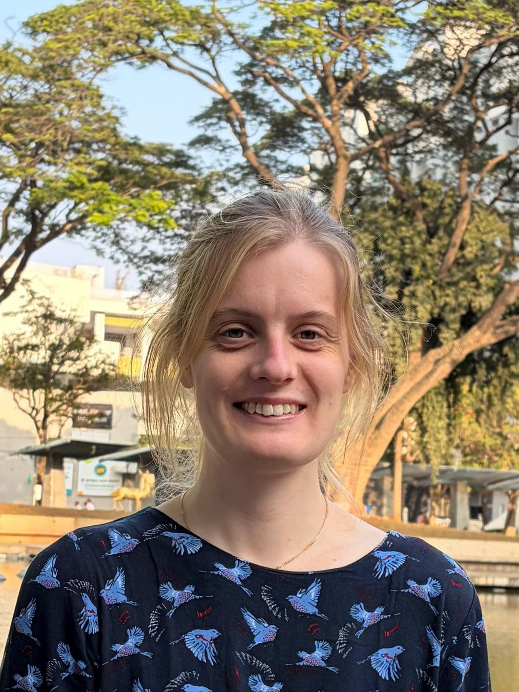

Understanding the evolution of biological complexity through mathematical theory.
I am a postdoctoral researcher funded by the Swedish Research Council. I am affiliated with the Department of Biology at Lund University and currently conduct my research at Osnabrück University in collaboration with Professor Christian Kost. I also collaborate closely with Professor Arne Traulsen at the Max Planck Institute for Evolutionary Biology.
My research combines mathematical theory and computational modelling to understand the evolution of biological complexity and the emergence of new levels of biological organisation. I am particularly interested in how life cycle evolution shapes the ways organisms grow and reproduce, and how close interactions between species can become integrated into multi-species life cycles. I study how the life cycles of interacting species can become coupled over evolutionary time, and how processes such as reproduction and inheritance can allow these associations to persist and evolve across generations. More broadly, I am interested in how multi-species life cycles can give rise to increasingly integrated forms of biological organisation.